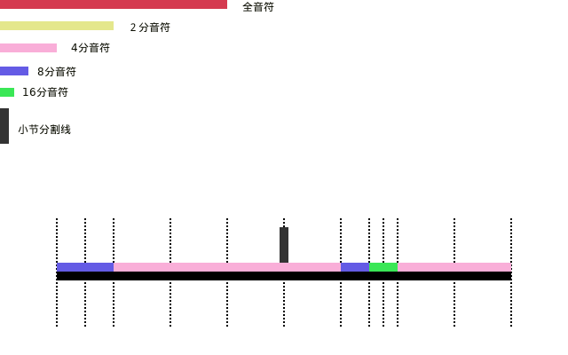
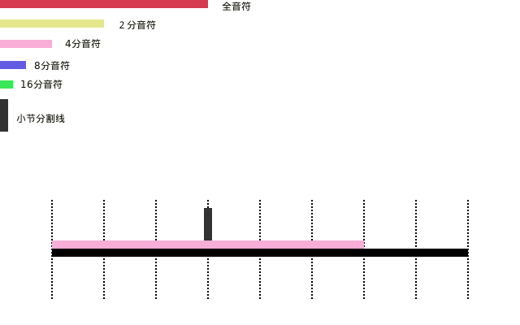
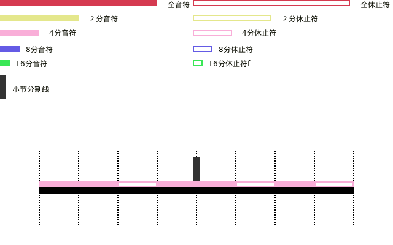
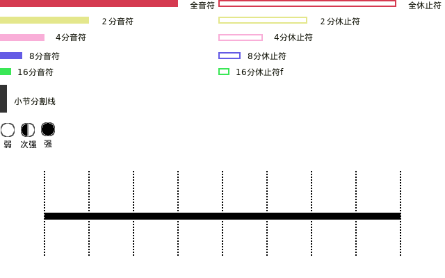
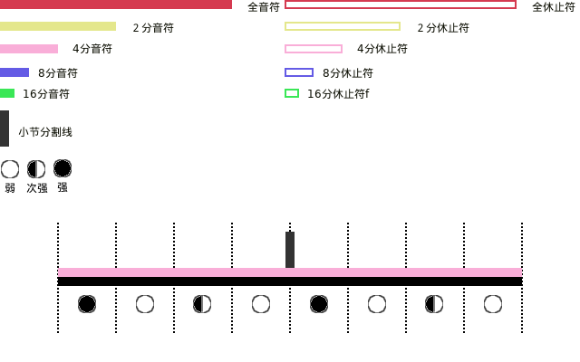

EDM必备乐理教程
不懂音乐理论(music theory)也能创作出 EDM,但是这样很快就会遇到瓶颈,区别好比在掌握语法和不掌握语法的两种情况下学英语一样,
虽然都可以进行表达,但很明显掌握了语法可以表达的更加精确.
同理掌握了音乐理论可以让自己更加容易创作出更加好的 EDM.
而且音乐理论也不仅限于 EDM,在其它类型的音乐创作上也可以用得上.
我个人是从 BV1Rt411L7bC 学习的,不过说实话,有些地方实在是"一笔带过"了.
不过现在已经是互联网时代了,这些"一笔带过"的地方可以在网上找到补充,正是这个原因才让我写起了这篇笔记.
音乐理论概念
速度以及节奏(Tempo & Rhythm)
在编写一首曲目前,会先决定曲目的播放速度,这个参数叫做 速度,它的单位是 beats per minute,
简称 BPM, 中文是每分钟多少拍.
为了更加明白的理解节奏是什么,先暂且不看它的概念,继续从 BPM 里面的"拍"出发:
什么是拍(beat)?
拍实际上是一个相对的时间单位,比如现实的 1 分钟是一个绝对的时间值,它必定等于 60 秒,
但拍不像分钟这样的时间单位,1 拍等于多少秒取决于 Tempo.
比如一首曲的速度是 60 BPM,那么它的 1 拍的时长(或叫时值)就是 \(60 \div 60 = 1\) 秒
再比如,通常 EDM 的速度是 128 BPM, 它的一拍的时长大约是 \(60 \div 128 \approx 0.46875\) 秒.
如你所见,同样是 1 拍,但在不同的 Tempo 下所对应的时长是不一样的.
现在可以开始学习什么是 节奏 了,所谓的节奏就是对多个长短不定的拍子进行编排,它是曲目的基础,
在确定速度之后,要做的第一件事情就是确定节奏了,那么问题来了,怎么描述节奏呢?
这时候我们要学习一个概念,叫做拍号(time signature/meter signature),比如 \(1/2\), \(2/2\), \(2/4\), \(3/4\), \(4/4\), \(9/8\), \(\cdots\).
拍号并非数学意义上的的分数, 所以这里面的 \(1/2\) 和 \(2/4\) 不是一回事, \(2/2\) 和 \(4/4\) 也同理,如此类推.
还有另外一种示法可以能更好地与分数进行区分,比如 \(3/4\) 可以用 \(^{3}_{4}\) 表示.
为了进一步与分数进行区分,先 暂且 把这例子里的 3 称呼为 top, 4 称呼为 bottom, 而不是叫什么分子分母.
说了半天,拍号到底怎么解读呢?
其实很简单,依然以 \(^{3}_{4}\) 作为例子,我们会把它读"作每个 小节 (bar/measure)由 3 个 4 分 音符 (note)组成".
要想真正理解它的含义就得想了解什么是小节和什么是音符.
在西方的音乐体系中,一首曲可以划分为若干个小节,每个小节由若干个拍组成,且而每个小节的拍子数量是一样的.
不知道你发现了没有,"每个小节由若干个拍组成" 和 "每个小节由若干个 n 分音符组成" 这两个描述似乎揭露了 "拍" 和 "音符" 有某种联系?
毋庸置疑,拍和音符都是相对的时间概念,而音符的时值是由拍的时值来决定的,我们在确定速度后就能得到 1 拍的时值,然后我们会把这 1 拍的时值作为 "n 分音符" 的时值.
根据时值长短来划分,音符有很多种:
时值最大的音符叫做 2 全音符 (breve);
但在很多教学里面只会从时值只有它的一半 全音符 (whole note) 开始讲起来;
其次,就是 2 分音符 (minim/half note),它的时值是 全音符 的一半;
往下是 4 分音符 (crotchet/quarter note),它的时值是 2 分音符 的一半;
往下是 8 分音符 (quaver/eighth note),它的时值是 4 分音符 的一半;
往下是 16 分音符 (demiquaver/semiquaver/sixteenth note),它的时值是 8 分音符 的一半;
往下是 32 分音符 (demisemiquaver/thirty-second note),它的时值是 16 分音符 的一半;
再往下是 64 分音符 (hemidemisemiquaver/sixty-fourth note),它的时值是 32 分音符 的一半.
这些都是按照一半进行划分的音符: \(\frac{1}{2}^{i-1}\), \(i\) 是上面介绍音符时候的序数, \(0 \leq i \leq 7\).
除了上面提到的这些音符,还有其它音符,让我们留到后面再提.
现在先来确定音符和拍子的关系,就比如 \(^{3}_{4}\) 就是以 1 个 4 分音符作为 1 拍,每个小节有 3 拍,
如果一首曲的速度是 60 BPM, 那么 1 个 4 分音符就是 1 秒,以它为参考点,可以推出一个 2 分音符就是 2 秒,1 个全音符是 4 秒,如此类推;
那么这首曲目的每个小节就是 3 秒.
再举个例子,同样在 60 BPM 下,曲目的拍号是 \(^{12}_{8}\),就是说以 1 个 8 分音符作为 1 拍,每个小节有 12 拍,
1 个 8 分音符是 1 秒,每个小节就是 12 秒.
我作了一些图来对拍号进行一些直观的了解(本来是应该用乐谱来进行讲解的,但乐谱种类太多了,而且不够直观,因此我采用了更加直观的图例来描述节奏这些概念,有了这些概念再入门乐谱也是没问题的).
每张图都只有 2 个小节,就比如下面的 \(^{4}_{4}\) 拍,

Figure 1: 4/4 拍
可以看到每个小节有 4 个 4 分音符, 1 个 4 分音符为 1 拍,也就是每小节有 4 拍;
这图表示每 1 拍都必须发声,并且每 1 拍的发声的时间长度为 1 个 4 分音符,每个音符只能发出一个声音.
这里有一点要注意, 我们 并 没有 说 1 拍里面只能发出 1 个声音, 别忘了我们说的"几拍"以及 "\(n\) 分音符"都是时间概念.

Figure 2: 4/4 拍 (非均匀)
就比如这个图,可以看到的一个小节里面的第一拍是就发出了 2 个声音,每个声音的发声时间长度均为 1 个 8 分音符;
第二个小节就更加"离谱",它的第二拍发出 3 个声音, 1 个 8 分音符的时间长以及 2 个 16 分音符的时间长;
这两个小节的"一拍多声音"的拍子都有一个共同点,那就是各自的声音的时值总和都为 1 个 4 分音符: \(\frac{1}{8} + \frac{1}{8} = \frac{1}{8} + \frac{1}{16} + \frac{1}{16} = \frac{1}{4}\).
我们会说 \(^{4}_{4}\) 有 4 个主拍(main beats).
我们再来看一个 \(^{3}_{4}\) 拍的例子,

Figure 3: 3/4 拍
看到这图后,你可能会想,我们能不能在 \(^{4}_{4}\) 拍里面让其中一拍不发声,来得到 \(^{3}_{4}\) 拍呢?
这是个好问题,答案是不能的,我们要注意的是,拍号实际上也是一个和时间有关系的概念,让其中一拍甚至是更多拍不发声,这些时间都是需要流逝的,
因此在 \(^{4}_{4}\) 拍里面让其中一拍不发声,得到的仍然是 \(^{4}_{4}\) 拍.
同时也延伸出了一个道理,拍子之间是连续的,那些没发声的时间段实际上也是拍子,这种不发声的拍子对应一种名为 休止符 (rest)的"音符".
下面就新定义一些图例来表示休止符.

Figure 4: 休止符
休止符也是有不同时值的,与 n 分音符对应,存在 n 分休止符, n 分音符发声多久, n 分休止符就静音多久.

Figure 5: 带休止符的 4/4 拍
基本上对节拍时值的讨论就到此为止了,开始思考下一个问题: 拍子的强弱问题.
除了时值外,拍子力度的 强弱规律 也是很重要的,这意味这小节里面的每拍的时值虽然一样,但这并不意味拍子之间是平等的.
这里需要引入新的图例来表示力度强弱这一个概念,

Figure 6: 强弱拍
先拿 \(^{2}_{2}\) 拍作为例子,它的强弱分布如下,

Figure 7: 2/2 拍的强弱分布
可以看到它的模式是每个小节"强-弱",如果在听音乐的时候听到这样的模式,毫无疑问它的拍号就是 \(^{2}_{2}\) 拍.
力度(stress)强的拍子叫做 强拍 (accented beat/"on" beat),反之力度弱的拍子叫做 弱拍 (unaccented beat/"off" beat).
小节的第一拍叫做 downbeat, 最后一拍是 upbeat.
之所以这么叫是因为在乐队指挥在指挥乐队演奏时总是在小节的第一拍的时候往下划动手中的指挥棒,而在小节的最后一拍的时候做出上划的动作,刚好一下一上为一个小节.
而第一拍的力度刚好就是最强的,最后一拍的力度刚好是弱的.
我们再来看 \(^{4}_{4}\) 拍的强弱分布,

Figure 8: 4/4 拍的强弱分布
它的模式是每个小节"强-弱-次强-弱",实际上,它可以被看作是 \(^{2}_{2}\) 的"放大版".
从宏观上来看,它依然是遵守"强-弱"的模式,只要把前 2 拍看作一个整体,把后 2 拍看作一个整体,第 1 个整体就像 1 个强拍,第 2 个整体比第 1 个整体要弱一点,所以它就像是 1 个弱拍;
从微观上看,第 1 拍和第 2 拍就是"强-弱"的模式,第 3 拍和第 4 拍也是 "强-弱"的模式,
只是第 3 拍的力度比第 1 拍的力度要弱一点,但依然比第 4 拍的强度高.
还没完,我们再来看一下 \(^{3}_{8}\) 拍的,

Figure 9: 3/8 拍的强弱分布
这里的模式是每个小节遵守"强-弱-弱"的模式,实际上 \(^{3}_{4}\) 拍也是这个模式的.
我们再来看一下 \(^{6}_{8}\) 拍的强弱分布,

Figure 10: 6/8 拍的强弱分布
和 \(^{4}_{4}\) 拍类似, \(^{6}_{8}\) 拍是 \(^{3}_{8}\) 拍的放大版,每 3 拍看作一个整体,第一个整体看作 1 个强拍,第 2 个整体看做一个弱拍,两个整体就是"强-弱"模式.
还会有 \(^{9}_{8}\) 拍的,它的强弱分布也是 \(^{3}_{8}\) 拍的放大版,比 \(^{6}_{8}\) 拍多 1 个第 3 整体,这整体也作 1 个弱拍.
来一个更大的 \(^{12}_{8}\) 拍,它的强弱分布是"强-弱-弱-次强-弱-弱-次强-弱-弱-次强-弱-弱",图就不画了.
看到这里,你应该能发现节拍的强弱分布了吧,就让我来帮你说出来吧:
如果一个小节的拍数是 2 的倍数,并且不是 3 的倍数,那么它强弱模式是以"强-弱"开头,后面跟着若干个"次强-弱"模式,
大概就是 "强-弱(-次强-弱)*", "z*" 符号表示 "z" 有 0 到无数个,同理 "(-次强-弱)*" 表示 "(-次强-弱)" 有 0 到无数个;
如果一个小节的拍数是 3 的倍数,那么它的强弱模式是以"强-弱-弱"开头,后面跟着若干个"次强-弱-弱"模式,
简写就是 "强-弱-弱(-次强-弱-弱)*".
这就引出一个问题了,如果小节的拍数不满足上面 2 种情况呢?比如 \(^{5}_{8}\) 拍这样的呢?
这种情况需要看成上面 2 种情况的混合,有 2 种划分情况:
第 1 种是前 2 拍的模式是"强-弱"模式,后 3 拍的模式是"次强-弱-弱"模式;
第 2 种是前 3 拍的模式是"强-弱-弱"模式,后 2 拍的模式是"次强-弱-弱"模式.
最后,需要提醒一点: 拍子的强弱规律并非是一定按照上面的规定,比如有些\(^{4}_{4}\) 拍的音乐是以弱拍为起始拍的,
简单来说,拍子的强弱是编区的人订的,这些涉及另外的概念了,就留到后面再说.
节奏进阶之连音符
所谓连音符(tuplets)就是 以不规则的方式划分节拍 得到的音符,规则的方式就是前面提到的以 \(\frac{1}{2}^{n}\) 倍划分节拍,也就是一半一半的划分.
连音符可以用于改变曲目原有的节奏,作为不同节奏之间的衔接,因此,掌握连音符是编写节奏的基础.
大概有如下几种连音符:
3 连音符(Triplets)
这是最常见的一种连音符了,所谓 3 连音就是把 2 个相同的音符分为 3 等份,其中的 1 份就叫做 1 个 3 连音符;
比如把 2 个 4 分音符平均分为 3 等份,其中的 1 份叫做 1 个 4 分 3 连音符,它的时值为 \(\frac{2}{4} \times \frac{1}{3} = \frac{2}{12}\),
(这里我们尽量不做约分,做了约分意味着对音符之间进行转换),
1 个 4 分 3 连音符的时值是 1 个 4 分音符时值的 \(\frac{2}{12} \div \frac{1}{4} = \frac{2}{3}\) 倍,
而 3 个 3 连音符的时值刚好为 1 个 2 分音符: \(\frac{2}{12} \times 3 = \frac{2}{4} = \frac{1}{2}\).
8 分 3 连音, 16 分 3 连音符等等也是同理的,就不再赘述了.
2 连音符(Duplets)
2 连音符实际上不是太常见,它是把 3 个相同的音符分为 2 等份,其中的 1 份就叫做 1 个 2 连音符;
比如把 3 个 4 分音符分为 2 等份,其中的 1 份叫做 1 个 4 分 2 连音符,它的时值为 \(\frac{3}{4} \times \frac{1}{2} = \frac{3}{8}\).
1 个 4 分 2 连音符的时值是 1 个 4 分音符时值的 \(\frac{3}{8} \div \frac{1}{4} = \frac{3}{2}\) 倍,
当于在 1 个 4 分音符基础上延长它的 1 半(1 个 8 分音符).
这里需要提一个概念: 附点音符(dotted note), 也就是把 1 个音符的时值延长为它的 1.5 倍,比如上面的例子就被叫做 1 个 附点 4 分音符(dotted quarter note).
5 连音符(Quintuplets)
5 连音符是把 4 个相同的音符分为 5 等份,其中的 1 份就叫做 1 个 5 连音符;
比如把 4 个 8 分音符分为 5 等份,其中的 1 份叫做 1 个 8 分 5 连音符,它的时值为 \(\frac{4}{8} \times \frac{1}{5} = \frac{4}{40}\).
1 个 8 分 5 连音符的时值是 1 个 8 分音符时值的 \(\frac{4}{40} \div \frac{1}{8} = \frac{4}{5}\) 倍.
6 连音符(Sextuplets)
6 连音符是把 4 个相同的音符分为 6 等份,其中的 1 份就叫做 1 个 6 连音符;
比如把 4 个 8 分音符分为 6 等份,其中的 1 份叫做 1 个 8 分 6 连音符,它的时值为 \(\frac{4}{8} \times \frac{1}{6} = \frac{4}{48}\).
1 个 8 分 6 连音符的时值是 1 个 8 分音符时值的 \(\frac{4}{48} \div \frac{1}{8} = \frac{2}{3}\) 倍.
7 连音符(Septuplets)
7 连音符是把 4 个相同的音符分为 7 等份,其中的 1 份就叫做 1 个 7 连音符;
比如把 4 个 8 分音符分为 7 等份,其中的 1 份叫做 1 个 8 分 7 连音符,它的时值为 \(\frac{4}{8} \times \frac{1}{7} = \frac{4}{56}\).
1 个 8 分 7 连音符的时值是 1 个 8 分音符时值的 \(\frac{4}{56} \div \frac{1}{8} = \frac{4}{7}\) 倍.
9 连音符(Nonuplets)
9 连音符是把 8 个相同的音符分为 9 等份,其中的 1 份就叫做 1 个 9 连音符;
比如把 4 个 8 分音符分为 9 等份,其中的 1 份叫做 1 个 8 分 9 连音符,它的时值为 \(\frac{8}{8} \times \frac{1}{9} = \frac{8}{72}\).
1 个 8 分 9 连音符的时值是 1 个 8 分音符时值的 \(\frac{8}{72} \div \frac{1}{8} = \frac{8}{9}\) 倍.